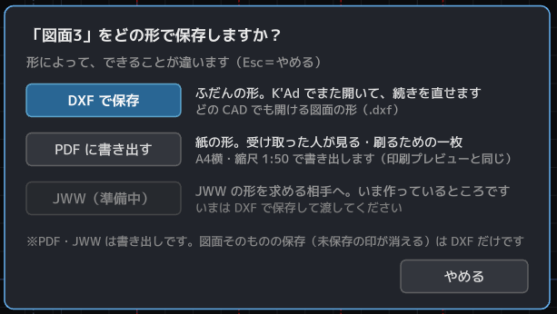

13. Opening, saving, and setting the true size
Projects (PROJ): a catalogue of your drawings
On a large job the drawings run into dozens. Staring at a folder does not tell you “now which one was this?” from the file name.
A project is a catalogue that remembers, for each sheet, where it is and what it is.
There are two ways to open it: "Project" in the File menu on the menu bar, or PROJ → Enter in the command box.
When it opens, it first asks where to start
It asks with three choices.
- ①Open a project = carry on from a catalogue you made before.
- ②Create a new project = start a new catalogue for this job.
- ③Just open a drawing = no project is made. It is the ordinary Open dialogue, and this panel closes.
※ If you had a catalogue open before, it comes up already showing where you left off.
* If you want this board every time K'Ad starts, turn on "Project board at startup" on the Settings board (default is off).
Putting drawings into the catalogue (four buttons along the foot)
- ＋ フォルダごと (a whole folder) = choose the job's folder and every drawing inside it, subfolders included, is brought in together. Dozens in one move. The heading each one goes under is simply the name of the folder it sits in. If you have already sorted them into folders, that is your tree. ※ PDFs are not picked up (it would bring in PDFs that are not drawings).
- ＋ 選んで加える (choose and add) = pick just the drawings you want (several at a time). PDFs do come in this way.
- ＋ この図面を加える (add this drawing) = adds the one you have open.
- 新しい図面を作る (create a new drawing) = makes a new drawing for this job, names it, lists it in the catalogue, and opens it.
Tidying the catalogue (four buttons at the right of each row)
- The up and down triangles = reordering. Press to pick a row up, then press the row you want it in front of. Press a heading and it goes to the end of that section. There is no dragging (just pressing). To stop, press again or Esc.
- The folder icon = retype which section this drawing belongs to. Leave it empty and press Enter to return it to the unsorted ones.
- The pencil = a note. Write something like “2F plan S=1:100” and it becomes the answer to “now which one was this?”.
- × = take it out of the catalogue (the drawing itself is not deleted).
※ Press a heading such as 【平面図】 (Plans) and you can retype the section's name (everything under it moves together).
※ The name of whatever tool you rest your finger on appears in a line on the panel.
Opening
Click a name = that drawing opens. A drawing already open is not opened again; you are taken to its tab (● = the drawing you are looking at / ○ = one open in another tab).
The important part
- The catalogue does not swallow your drawings. The DXF files stay where they always were, and other CAD programs open them exactly as before.
- The × on a row only takes it out of the catalogue. The drawing itself is not deleted.
- The catalogue (.kadproj) is plain text. You can open it in a text editor and correct it by hand. Notes you write beginning with “#” are kept, not thrown away. Once you have corrected it by hand, press 読み直す (Reload) at the foot and it appears on screen.
- When a drawing cannot be found it says 見つかりません (not found) in red (it has been moved, or deleted).
Opening (⌘O)
DXF, DWG, PDF, JWW, STL and images (PNG, JPG) can be opened.
[Open] in the File menu on the menu bar, or OPEN in the command box, does the same.
- DXF = our mother tongue. It opens as it is and saves as it is.
- DWG = on the Mac version only, and only if the translator (LibreDWG) is present. When it will not open, asking the sender for a DXF is the quickest road by far (every CAD program can write DXF).
- PDF = a PDF containing lines can be brought in as a drawing. From a bundle of pages it chooses the one with the most lines. If it chose wrongly, type PAGE 4 in the Command Line (= swap to page 4).
- JWW = a Jw_cad drawing. The scale is translated to full size as it comes in.
- STL = opens in the 3D room, where you can turn it and look.
- PNG / JPG = laid in a new tab as an "underlay" (see "Underlay" below).
Saving (⌘S)

Saving is DXF itself = a form every CAD program can read.
On the first save and on Save As (⌘⇧S), a board asks the format.
In the command box: SAVE (save) and SAVEAS (save as).
- Save as DXF = the everyday format. You can open it again in K'Ad and continue.
- Export to PDF = the paper format. Same paper and scale as the print preview. Exporting is not saving the drawing (continue in DXF).
- JWW = being built now (use DXF until then).
From the second time, ⌘S overwrites the same DXF (it asks once first).
A drawing that came from another format (DWG, PDF, JWW) always asks for a new name, to protect the original. The original file is untouched.
CAL: setting the true size
A drawing that came from a PDF or the like is not necessarily at true size.
- ①Press [Calibrate] on the Modify tab, or CAL → Enter in the command box ("実寸" also works).
- ②With snap, indicate exactly the two ends of a dimension written on the drawing (“1208”, say).
- ③Type its actual length into the Command Line → Enter (1208).
- ④Measure a second place, on another dimension, and you have a check = a health inspection for the drawing.
- ⑤An empty Enter = do it. The whole drawing comes to true size.
Pick a section (DANMEN)
From a drawing you received (DXF, JWW, PDF, underlay), pick the outline of the structure to be cut (columns, walls…) and make it a new sheet.
The original drawing is only read = not a single character is written to it.
- ①[Pick section] on the Process tab, or DANMEN in the command box ("断面" also works) → Enter. A board floats over the drawing.
- ②Click once inside the outline. The enclosure lights up in amber and states "width × height".
- ③If that is right, click inside once more or press Enter to take it. It is written as one closed polyline on layer "躯体" in a new tab "断面：original name" (units are mm).
- ④Move there with [To the section tab] on the board and save with ⌘S.
- For drawings with broken lines, columns crossed by grid lines, or on an underlay (image), use [Rectangle by 2 points] on the board and pick two opposite corners.
- When the width shown differs from the true size (PDF, scaled drawings), type the true width into [True width] on the board and press Enter = it is rescaled. After picking the outline you can simply start typing numbers and the field opens.
- U, Esc and right-click go back one step at a time. U after taking undoes one step on the section sheet (the original drawing does not change).
- Holes inside the enclosure and shapes drawn inside it (islands) are not taken.
- There is no way yet to pick rebar or steel (structure outlines only).
Compare drawings (COMPARE)
When a revised drawing arrives, find what changed from the previous version.
- ①Open the previous and the new version with ⌘O (PDF, DXF, JWW).
- ②[Compare] in the File menu on the menu bar, or COMPARE in the command box ("比較" also works) → Enter. It is in the right-click menu too.
- ③On the board, choose [Previous] and [New] from the tabs with ‹ ›, then [Compare].
- ④The result appears in a new tab. Not a character of the two originals is changed. Red = only in the previous version (removed) · green = only in the new version (added) · grey = the same · amber cloud and number = an enclosure around a change.
- ⑤[Next ›] on the board goes to the changes one by one. The cloud numbers are the same as "change i / n" on the board.
- Turn off the bulb of layer "比較_同じ" and only the changes remain.
- Added lines can be selected by [Layer] in Quick Select and copied.
- Even when lines are chopped into pieces, a line in the same place counts as "the same". A shift smaller than 0.2 mm on paper is "the same".
- Text is compared by content and position (rewritten dimension figures show up too).
- Hatches are compared down to the pattern lines (a revision that changes only the pattern shows up too).
- Image-only PDFs (scans) have no lines and cannot be compared.
[Placement = two sheets with different scale or margins] Two sheets that differ in size or position — a full-size DXF and a PDF in paper mm, or a PDF reprinted with different margins — can also be compared. The [Placement] chips on the board:
- Fit automatically (the usual choice) = lays the copy of the new version over the previous one using the same text found in both (room names, dimension figures…) and line ends. Two sheets that already overlap are not moved.
- As is = compares without moving.
- Fit by 2 points = for when automatic does not fit (drawings printed rotated, for example). Four clicks — point 1 on the previous version → the same point on the new one → point 2 on the previous → the same point 2 on the new — overlay them and compare. It snaps to corners and intersections. The farther apart the two points, the more accurate. U, Esc, right-click = back to the previous point (cancel if at the first).
- The result is in the coordinates of the previous version (you can copy the added lines straight into your own drawing made from the previous version). The two originals are not moved.
[Print the list of changes] Above the drawing in the result tab are the title, the colour key, the placement, and
the counts per number ("3 removed 1 · added 2").
Print this tab as it is and you get a sheet with the list.
Turn off the bulb of layer "比較_一覧" and the list is hidden.
Underlay (lay an image and trace over it)
Lay a photo or scan of a paper drawing (PNG, JPG) at the very bottom of the drawing as an "underlay", and trace over it with lines to make a drawing.
* The image never turns into lines automatically.
- ①Choose the image with ⌘O ([Open] in the File menu on the menu bar) → it is laid in a new tab. It lives on layer "下絵" and is not printed (it does not appear in PDFs either).
- ②Right after laying, it has a provisional size of 1 pixel = 1 mm. Press [Calibrate] on the bar below, pick the two ends of a dimension written on the drawing, type the real length → Enter → Enter. The underlay becomes full size.
- ③Use the density chips [100] [70] [50] [30] on the bar to make it easy to tell from the lines you trace (U undoes it; the image file is not changed).
- ④Trace over it with Line and Polyline. Snaps work only on the lines you drew and the corners of the underlay frame (not on lines inside the picture).
- Press the card "下絵 1" at the bottom right to select the underlay again and bring up the bar (the way back when you lose it or hide the layer).
- A large image is shown on screen reduced to 4,096 pixels on the long side (the original file is untouched).
Units (changing the measure)
When a drawing from elsewhere was drawn to another measure, this multiplies the whole drawing to match. The basis of the conversion is MM = 1 drawing unit.
単位 IN = an inch drawing ×25.4. 単位 MM IN = the reverse, ÷25.4.
単位 尺 = a shaku drawing ×303 or so. Leave out the second word and it converts back to the basic 1.
The words you can use: MM, CM, M, IN, FT, YD, MIL, DM, 寸 (sun), 尺 (shaku), 間 (ken).
The safety copy (automatic saving)
While you draw, a copy is taken every 30 minutes. Only drawings you have not saved yet are copied (a drawing you have saved already has the real thing on the disk).
It is kept beside the drawing itself, in a folder called recovery_予期せぬ終了 (“recovery — unexpected exit”), under the name recovery_<the name of the drawing>.dxf.
- When you save, and when the program closes properly, the copy goes away.
- A copy is left behind only on a day when the program went down.
- In the ordinary way of things you never have to look for it, or open it.
The name alone is in English on purpose: it is the sign that this is an emergency thing.
※ The browser version has no such copy (a browser has nowhere to keep it). On a day when the program goes down, the most you lose is thirty minutes of work.
Even so, a frequent ⌘S is the best protection of all.
When the program did not close properly last time
The next time you start it, it asks you this:
「recoveryファイルがあります。復元をしますか？」 — “There is a recovery file. Shall I restore it?”
- はい (yes) = it opens the copy. The tab is labelled with recovery in front of the name.
- いいえ (no) = nothing is opened, and the copy is not deleted. It stays beside the drawing, so you can open it yourself later.
When you save a drawing that was opened from a copy, it asks 「元の図面へ戻しますか？」 (“Shall I put it back into the original drawing?”). はい = it writes over the original drawing; いいえ = it saves under a new name. Once it is back, the recovery in front of the name falls away, and the copy is tidied up as well.
※ This question appears only on a day when the program really did go down (whether it went down is known from a separate mark, not from whether a copy happens to be there).
※ Even after it went down, on a day when there is no copy at all (because everything had been saved) it does not ask. It simply says one line in the history.
Closing without saving: you are asked twice
When you close a drawing you have not saved, it first asks 〈保存する〉 (save), 〈保存しない〉 (do not save), 〈やめる〉 (cancel).
If you choose 〈保存しない〉, it asks once more: 「本当に保存しないで、OKですか？」 — “Are you sure you want to close without saving?”
If you press 〈はい〉 (yes) here, those changes cannot be brought back (the copy is tidied away with them). 〈いいえ〉 (no) does nothing.
A slip of the hand is not rescued by a copy here; it is stopped by this second question.
Correct the manual there and this one is corrected the same day.
The pictures show the Windows version (retaken in November 2026). On the Mac version, Ctrl is ⌘ and Alt is ⌥.